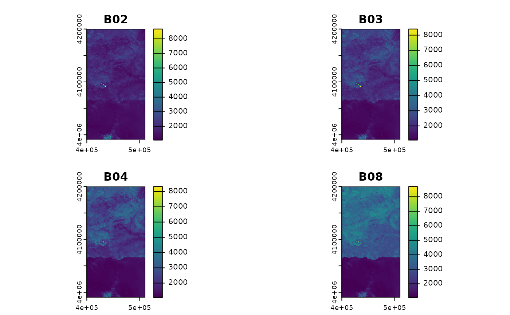

Grouping satellite bands by spectral and spatial resolution
Jose Samos (jsamos@ugr.es)
2023-09-29
Source:vignettes/satres.Rmd
satres.RmdIntroduction
We frequently download files with satellite bands from the ESA and USGS websites to perform data analysis, transform them or store them in DBMS. They are downloaded as files in ZIP or TAR format. In some cases, it is necessary to download several files that cover the study area, so the first operation to perform is to merge the bands. To access the bands we have to explicitly indicate the name and location of their files.
The goal of satres (satellite spectral and
spatial resolution) is to facilitate these operations by at
least partially automating them. It includes a function that makes it
easier to decompress files, useful when downloading many files. To treat
them together, it is enough to indicate the folder that contains the
decompressed files: Satellite bands are automatically obtained by name
(spectral) and spatial resolution; if we have several files to cover a
geographical area, the corresponding bands are automatically merged. The
result can be stored on disk and can also be obtained as objects of
class SpatRaster, from package terra.
The following is an illustrative example of how the package works, to show usage of features it offers. Finally, the document ends with conclusions.
An illustrative example
In this section an illustrative example is developed to show how the package works.
Getting the data
We want to do an analysis based on raster data obtained by satellite of the area of the municipality of Lanjarón in Granada (Spain). To cover this area, we have downloaded two satellite band files from the ESA website.
-
S2A_MSIL2A_20230905T105621_N0509_R094_T30SVF_20230905T170700.zip: 0.91 GB -
S2A_MSIL2A_20230905T105621_N0509_R094_T30SVG_20230905T170700.zip: 1.14 GB
In this case, the area is very small and requires only two files, we
can decompress them one by one with any unzip tool. We can also use the
sat_untarzip() function of the package: it decompresses all
the indicated list of files or all the files included in the given
folder.
sat_untarzip("download/esa", out_dir = "esa")We have unzipped them directly into a folder (esa
folder), creating two subfolders.
In order to reduce their size so they can be included in the package,
we have additionally selected and transformed the original raster files,
grouping them using the terra::aggregate() function with a
factor of 100. The result is the following folders:
-
esa/f: 751 KB -
esa/g: 842 KB
These folders are included in the package. They directly contain all raster files transformed according to the previous description. We can access them as shown below.
f <- system.file("extdata", "esa/f", package = "satres")
g <- system.file("extdata", "esa/g", package = "satres")Merging and classifying data
To merge the satellite bands corresponding to the same geographical
area (tiles) and classify them according to their spatial resolution, we
only have to create an object of the satres class. We pass
as a parameter the folder where the files are located. We can also
indicate a work folder as a parameter, where the virtual rasters will be
created; if none is indicated, a temporary folder will be used.
By default, only the satellite bands (B01 to B12)
are considered. By setting the only_bands parameter to
FALSE, we can indicate that all raster files included in
the folders that cover the area of interest are also treated, as shown
in the code below.
sr_all <- satres(dir = "esa", out_dir = "esa/out", only_bands = FALSE)For this case we only need the bands (B01 to B12), which we then obtain from the data stored in this package.
esa <- system.file("extdata", "esa", package = "satres")
sr <- satres(dir = esa)Using the results
Next we consult the spatial resolution of the result (remember that we have changed the resolution, adding it by a factor of 100).
sr |>
get_spatial_resolution()
#> [1] "r1000m" "r2000m" "r6000m"We obtain an object of class SpatRaster from the
terra package with all the bands of the indicated spatial
resolution.
r1000m <- sr |>
as_SpatRaster("r1000m")To show the available bands, we represent them graphically below.
terra::plot(r1000m)
The bands are directly accessible by name (B02, B03, B04 and B08 in the figure), within each object obtained in the result.
In the same way we can obtain the objects for the other levels of spatial resolution. In this case we are only going to show the names of the bands.
r2000m <- sr |>
as_SpatRaster("r2000m")
names(r2000m)
#> [1] "B01" "B02" "B03" "B04" "B05" "B06" "B07" "B11" "B12" "B8A"
r6000m <- sr |>
as_SpatRaster("r6000m")
names(r6000m)
#> [1] "B01" "B02" "B03" "B04" "B05" "B06" "B07" "B09" "B11" "B12" "B8A"We can save the results to disk using the functions of the
terra package. But we can also save them directly using the
save_by_resolution() function, which stores them with file
names obtained based on the spatial resolution. In this example, the
only_show_files parameter controls the execution of the
function so that it only displays the file names.
sr |>
save_by_resolution(out_dir = "esa/out", only_show_files = TRUE)
#> [1] "esa/out/r1000m.tif" "esa/out/r2000m.tif" "esa/out/r6000m.tif"Conclusions
The functions of the satres package make it easier to
work with satellite rasters.
Instead of accessing files individually by name, it merges files that form tiles from the same area and groups them according to their spatial resolution into one object.
We can obtain objects of class SpatRaster and work with
the terra package or we can store the result on disk to
process it by other means.